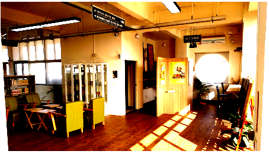
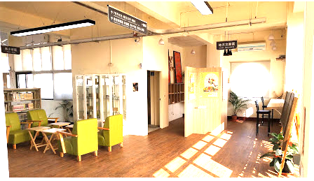
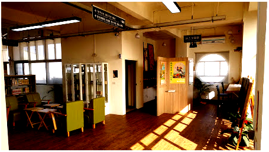
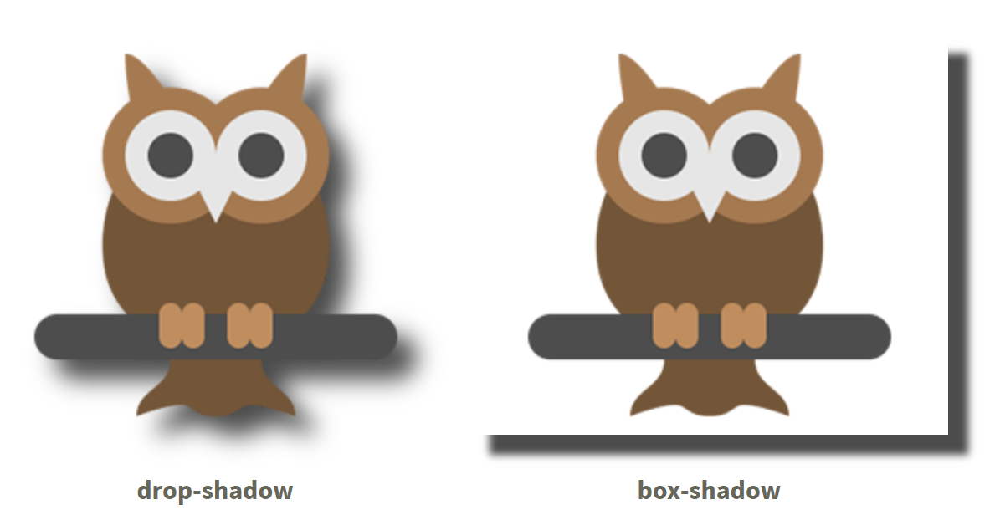
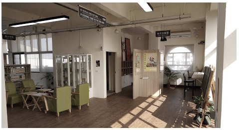
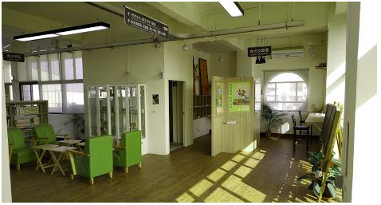
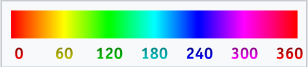
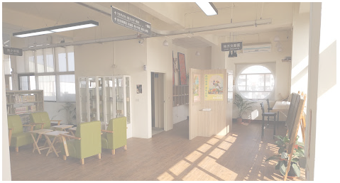
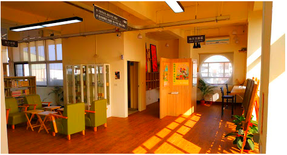
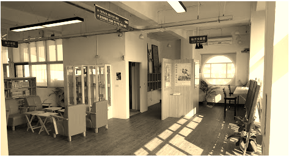

filter 屬性可同時指定多種特效
<!DOCTYPE html> <html> <head> <style> img { filter: contrast(200%) brightness(150%); } </style> </head> <body> <img src="https://i.imgur.com/KGIIhuP.jpg"> </body> </html>

以下個別介紹可用的濾鏡效果
一、blur 模糊
<!DOCTYPE html> <html> <head> <style> img { filter: blur(3px); } </style> </head> <body> <img src="https://i.imgur.com/KGIIhuP.jpg"> </body> </html>
單位為 px
二、brightness 亮度
<!DOCTYPE html> <html> <head> <style> img { filter: brightness(200%); } </style> </head> <body> <img src="https://i.imgur.com/KGIIhuP.jpg"> </body> </html>

單位可為百分比或數字(可帶小數點)，0% 或 0 代表全暗、100% 或 1 代表亮度不變、
200% 或 2 代表亮度是原來的兩倍。
三、contrast 對比度
<!DOCTYPE html> <html> <head> <style> img { filter: contrast(2); } </style> </head> <body> <img src="https://i.imgur.com/KGIIhuP.jpg"> </body> </html>

用來調整圖片明亮和陰暗部份的差異，
單位可為百分比或數字(可帶小數點)，100% 或 1 代表亮度不變、
大於 100% 則明暗之間的差距會加大。
四、drop-shadow 下拉陰影
<!DOCTYPE html> <html> <head> <style> img { filter: drop-shadow(20px 20px 10px #555); } </style> </head> <body> <img src="https://i.imgur.com/eO9ERFn.png"> </body> </html>
語法為 drop-shadow(horizontal-shadow vertical-shadow blur-spread color)
horizontal-shadow：單位為 px，水平陰影的橫移。
vertical-shadow：單位為 px，垂直陰影的縱移。
blur-spread：單位為 px，模糊度(非必要欄位)。
color：顏色值(非必要欄位)。
而 Drop-Shadow 與 Box-Shadow 的不同地方，如下圖

圖片來源：CSS 陰影效果的比較：Drop-Shadow 與 Box-Shadow
五、grayscale 灰階
<!DOCTYPE html> <html> <head> <style> img { filter: grayscale(0.5); } </style> </head> <body> <img src="https://i.imgur.com/KGIIhuP.jpg"> </body> </html>

單位可為百分比或數字(可帶小數點)，數值為 0% ~ 100%，
預設值為 0，表示原圖不變；100% 表示圖片完全灰階，顏色只有黑與白呈現。
六、hue-rotate 色相旋轉
<!DOCTYPE html> <html> <head> <style> img { filter: hue-rotate(30deg); } </style> </head> <body> <img src="https://i.imgur.com/KGIIhuP.jpg"> </body> </html>

單位為 deg，數值範圍為 0deg~360deg，0deg 或 360deg 代表原色。
如上範例，hue-rotate(30deg) 表示，原色再加上30度會對映到另一色，
至於會對映到什麼顏色，當然要先去了解什麼是「色相」了。

圖片來源：色相 - 維基百科，自由的百科全書
七、invert 負片
<!DOCTYPE html> <html> <head> <style> img { filter: invert(60%); } </style> </head> <body> <img src="https://i.imgur.com/KGIIhuP.jpg"> </body> </html>

單位可為百分比或數字(可帶小數點)，數值為 0% ~ 100%，
0%~49% 顏色與亮度為正色不變，
51%~100% 顏色與亮度變成互補色。
八、opacity 不透明度
<!DOCTYPE html> <html> <head> <style> img { filter: opacity(50%); } </style> </head> <body> <img src="https://i.imgur.com/KGIIhuP.jpg"> </body> </html>

單位可為百分比或數字(可帶小數點)，數值為 0% ~ 100%，
0 表示完全透明、1 表示完全不透明。
九、saturate 飽合度
<!DOCTYPE html> <html> <head> <style> img { filter: saturate(300%); } </style> </head> <body> <img src="https://i.imgur.com/KGIIhuP.jpg"> </body> </html>

單位可為百分比或數字(可帶小數點)，預設值是 100% 顏色不變，
小於1和100%是降低飽和度；大於1和100%則是增加飽和度。
十、sepia 懷舊
<!DOCTYPE html> <html> <head> <style> img { filter: sepia(100%); } </style> </head> <body> <img src="https://i.imgur.com/KGIIhuP.jpg"> </body> </html>

用來控制圖片的泛黃程度，可讓照片看起來就像老照片一樣泛黃，
單位可為百分比或數字(可帶小數點)，數值為 0% ~ 100%，
預設值是 0% 表示顏色不變。
十一、url 自訂濾鏡
<!DOCTYPE html> <html> <head> <style> img { filter: url(#blurMe); } </style> </head> <body> <svg width="0" height="0" xmlns="http://www.w3.org/2000/svg" xmlns:xlink="http://www.w3.org/1999/xlink"> <filter id="blurMe"> <feGaussianBlur in="SourceGraphic" stdDeviation="1" /> </filter> </svg> <img src="https://i.imgur.com/KGIIhuP.jpg"> </body> </html>
利用自訂 SVG 濾鏡元素
參考資料：